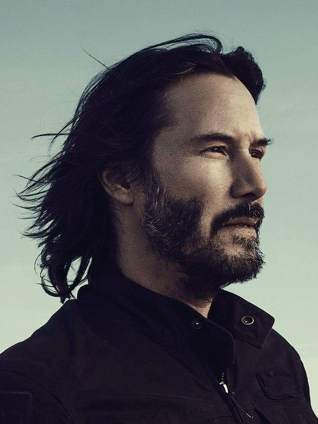

The simple act of paying attention can take you a long way.
Contact


Profile
Skills
Acting
Kung Fu
Motorcycles
Squarespace
Ironic Self-Effacement
Horseback Riding, Apparantley
Keanu Reeves
Career Highlights
Career Highlights
The Matrix Trilogy
The John Wick Trilogy
Speed
Education
- High School Dropout